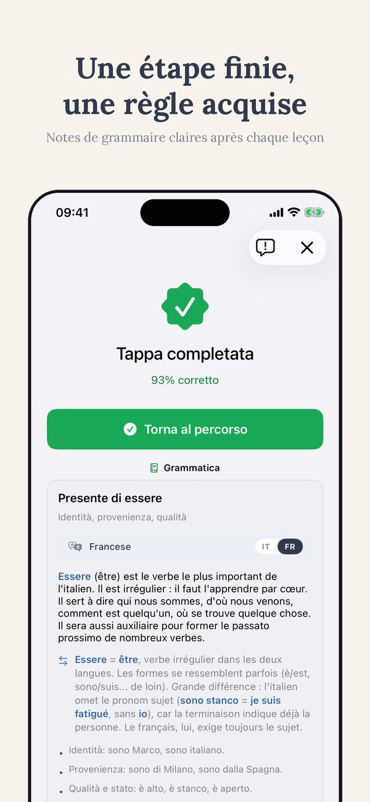
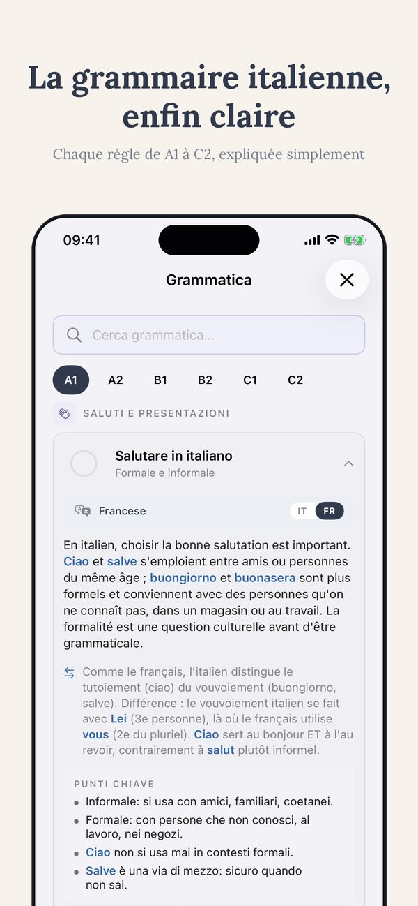
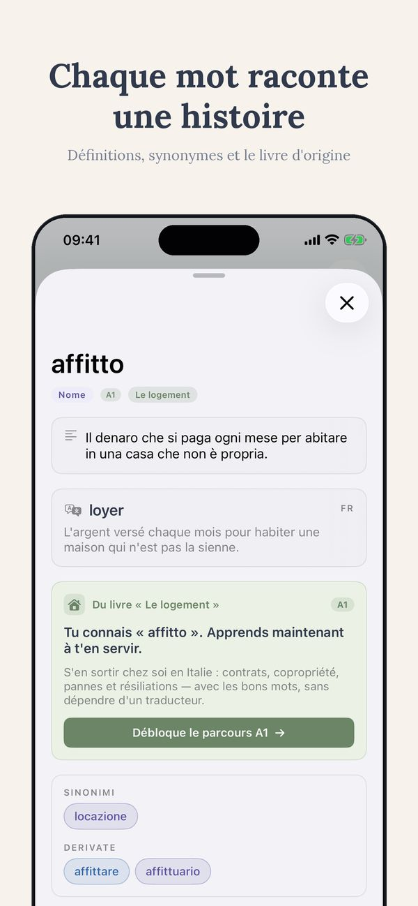
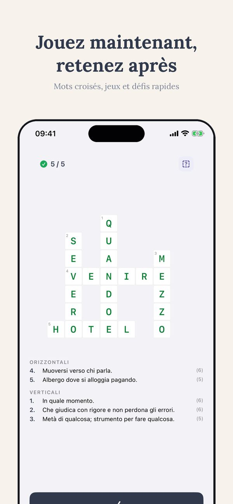

Test de niveau gratuit · Thuis Italiaans
Quel est mon niveau d'italien ?
« Intermédiaire » peut vouloir dire cinq choses différentes. Voici comment obtenir une vraie réponse sur l'échelle A1-C2 : un auto-test de deux minutes, et un test gratuit qui mesure les quatre compétences séparément.
Gratuit, environ 15 minutes, résultat immédiat
Faire le test de niveauPourquoi « intermédiaire » ne veut rien dire
Demandez à cinq personnes ce que signifie « italien intermédiaire » et vous obtiendrez cinq réponses. C'est pour cela que l'Europe s'est accordée sur une échelle commune, le CECR, avec six niveaux de A1 à C2. Tout cours, examen ou manuel sérieux s'y réfère. En une ligne chacun :
- A1 : vous survivez à une commande de café et à une présentation.
- A2 : vous gérez toute situation prévisible, courses, rendez-vous, petites conversations sur votre journée.
- B1 : vous tenez une vraie conversation, même quand elle sort du script.
- B2 : vous travaillez en italien et regardez la télévision sans souffrir.
- C1 : vous percevez les registres et les expressions ; la littérature s'ouvre.
- C2 : quasi natif, vous comprenez les blagues.
La vraie question n'est donc pas « suis-je intermédiaire ? » mais « où suis-je sur cette échelle, compétence par compétence ? »
L'auto-évaluation en deux minutes
Avant tout test, essayez cette liste honnête. Trouvez la dernière affirmation vraie pour vous :
- Je peux commander un repas et comprendre la réponse du serveur : vous êtes au moins en territoire A2.
- Je peux parler de mon travail pendant dix minutes et être compris : autour de B1.
- Je peux suivre un film sans sous-titres dans la plupart des scènes : autour de B2.
- Je peux défendre une position et sentir la différence entre italien formel et informel : autour de C1.
Utile, mais grossier, avec un biais connu : nous nous jugeons sur notre meilleure compétence. Ce qui nous amène au vrai problème.
Vos quatre compétences ne sont pas au même niveau
Presque personne n'est « B1 ». Vous êtes B1 en lecture, A2 en compréhension orale, A2 en expression orale et B1 à l'écrit, ou un autre mélange. La lecture a généralement un niveau d'avance, parce que vous contrôlez la vitesse. L'oral traîne, parce que les Italiens ne ralentissent pas pour vous. Une étiquette unique cache exactement l'information dont vous avez besoin : quelle compétence travailler.
C'est pourquoi mon test de niveau gratuit mesure les quatre compétences séparément. Il prend environ quinze minutes, et le résultat est immédiat : pas une lettre, un profil. Deux élèves avec le même « B1 » peuvent repartir avec deux plans complètement différents.
Quinze minutes, quatre compétences, une réponse claire
Gratuit, sans mur d'inscription devant votre résultat. Vous repartez en connaissant votre niveau par compétence et votre point de départ.
Gratuit, environ 15 minutes, résultat immédiat
Faire le test de niveauTest gratuit ou certificat officiel ?
Ils répondent à des questions différentes. Un test de niveau gratuit est pour vous : il vous dit où commencer et quoi travailler, aujourd'hui, sans frais. Un certificat officiel, CILS, CELI ou PLIDA, est pour une institution : citoyenneté, université, employeur. Il coûte de l'argent, n'a lieu que quelques fois par an, et prouve sur papier ce que le test gratuit vous a dit en quinze minutes.
L'ordre pratique : le test gratuit d'abord, toujours. Si le certificat vous est nécessaire, le test vous dit si vous êtes prêt à réserver la session d'examen ou si cet argent serait mieux investi dans trois mois de préparation supplémentaires. Pour la citoyenneté italienne, le parcours est spécifique : il est expliqué ici.
Quoi faire du résultat
Un niveau n'est utile que s'il change ce que vous faites ensuite.
- Choisissez du matériel à votre niveau. Un contenu un niveau trop haut est le tueur de motivation le plus rapide qui existe. Livres, exercices et cours doivent se situer juste au-dessus de votre zone de confort, pas deux étages plus haut. Commencez par les livres gradués par niveau et les exercices gratuits.
- Travaillez la compétence qui traîne. Si l'oral est en retard, plus d'exercices de grammaire n'y changeront rien. C'est là qu'un cours aide : quelqu'un qui entend votre italien et s'y adapte. Le premier cours d'essai est gratuit, en ligne où que vous soyez.
- Refaites le test dans trois mois, pas dans trois semaines. Sous trois mois, les différences restent dans la marge d'erreur de n'importe quel test. Le repasser souvent produit de la frustration, pas de l'information.
Questions fréquentes
Quelle est la fiabilité d'un test de niveau en ligne ?
Les bons tests vous situent à environ un demi-niveau près, ce qui suffit pour choisir du matériel et un point de départ. La répartition par compétence compte plus que l'étiquette unique : elle vous dit quoi travailler, pas seulement où vous êtes.
Ma lecture est B1 mais mon oral est A2. Quel est mon niveau ?
Les deux, et c'est normal. La lecture a généralement de l'avance parce que vous contrôlez le rythme. Utilisez du matériel B1 pour lire, et mettez votre temps de pratique dans l'oral jusqu'à ce qu'il rattrape.
À quelle fréquence refaire le test ?
Tous les trois mois au maximum. En dessous, les changements sont plus petits que la marge d'erreur du test, et le repasser souvent ne produit que de la frustration.
Arrêtez de deviner. Mesurez.
Quinze minutes, les quatre compétences séparément, résultat immédiat. Ensuite, livres, exercices et cours au niveau qui est vraiment le vôtre.
Gratuit, environ 15 minutes, résultat immédiat
Faire le test de niveauTi en action
Parcours CECR, exercices, edicola et classiques italiens gradués — de A1 à C2, en 14 langues.






Plus de Thuis Italiaans
Livres gradués par niveau · Cours d'italien en ligne · 700+ exercices gratuits